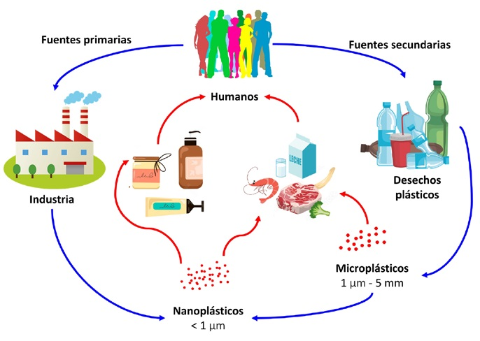

La Crisis Actual de los Residuos Sólidos
El modelo económico lineal basado en extraer, producir, consumir y desechar ha provocado una acumulación sin precedentes de basura en todo el planeta. Cada año se generan más de 2,000 millones de toneladas de residuos sólidos urbanos a nivel mundial, y una gran proporción termina en tiraderos a cielo abierto o dispersa en ecosistemas naturales sin recibir tratamiento.
En entornos urbanos y semiáridos como Ciudad Juárez, la dispersión de plásticos ligeros por el viento, la quema clandestina de basura y la saturación de los rellenos sanitarios representan riesgos directos para la salud respiratoria, la calidad del suelo y los mantos freáticos.
1. Impacto en los Ecosistemas Terrestres y Acuáticos
Cuando los desechos no se separan ni se canalizan a sistemas de aprovechamiento, alteran el equilibrio físico y químico de los hábitats naturales:

Figura 1. Efectos de la acumulación de residuos sólidos en medios terrestres y cuerpos de agua.
Degradación del Suelo
La filtración de lixiviados (líquidos tóxicos generados por la descomposición de basura mezclada con metales pesados y químicos) contamina el subsuelo, reduce su fertilidad y afecta la flora local.
Contaminación de Cuerpos de Agua
Los residuos arrastrados por corrientes de lluvia obstruyen drenajes urbanos y desembocan en ríos y océanos, provocando la muerte de fauna acuática por ingestión o enredo.
2. El Ciclo y Riesgo de los Microplásticos
Los plásticos no se biodegradan; en cambio, se fragmentan lentamente por acción de la radiación solar, el calor y la fricción en partículas menores a 5 milímetros conocidas como microplásticos.

Figura 2. Ruta de fragmentación de plásticos de un solo uso y su ingreso a la cadena trófica.
Debido a su tamaño microscópico, estas partículas son transportadas por el aire y el agua, ingresando a la cadena alimenticia y acumulándose tanto en organismos silvestres como en el cuerpo humano.
Volver al índice3. Principales Consecuencias Ambientales
De acuerdo con reportes internacionales, los cinco impactos más críticos derivados de la mala gestión de residuos en orden de alcance son:
- Emisión de gases de efecto invernadero: La descomposición anaeróbica de materia orgánica en vertederos libera metano, un gas con un potencial de calentamiento global mucho mayor que el dióxido de carbono.
- Pérdida de biodiversidad: Alteración de cadenas tróficas y destrucción de hábitats por acumulación de desechos persistentes.
- Contaminación atmosférica local: La quema de plásticos, llantas y basura doméstica libera dioxinas, furanos y partículas finas nocivas para las vías respiratorias.
- Saturación de infraestructura urbana: Bloqueo de alcantarillas y cauces pluviales que agrava las inundaciones durante temporadas de lluvia.
- Agotamiento de recursos naturales: Al no reciclar papel, metales o vidrio, se mantiene una extracción continua de materias primas vírgenes.
4. Fuentes Consultadas (Formato APA)
- Banco Mundial. (2018). What a Waste 2.0: A Global Snapshot of Solid Waste Management to 2050. World Bank Group.
- Programa de las Naciones Unidas para el Medio Ambiente [PNUMA]. (2021). De la contaminación a la solución: una evaluación global de la basura marina y la contaminación por plásticos. ONU.
- Secretaría de Medio Ambiente y Recursos Naturales [SEMARNAT]. (2020). Diagnóstico Básico para la Gestión Integral de los Residuos. Gobierno de México.